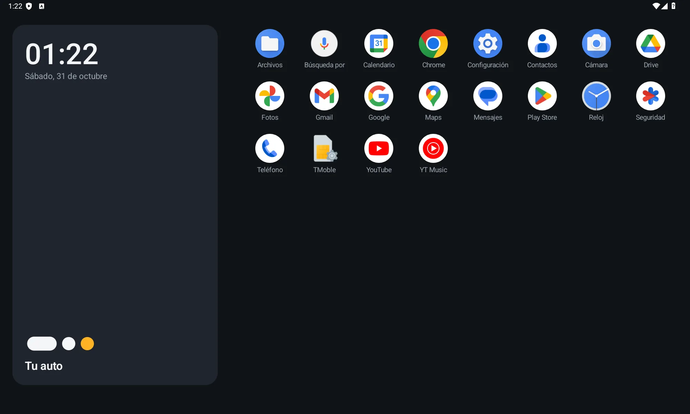

Tu auto, en limpio.
El launcher para pantallas Android de auto: ligero, rápido y elegante. De 6" a 11" o más, en la pantalla más lenta o en la más nueva.
Sin anuncios, sin cuentas y sin internet. Código abierto.

Todo viene apagado.
Recién instalado, LiteDash es lo mínimo: tu reloj y tus apps. Cada extra se enciende cuando tú quieres, y lo que está apagado no gasta nada: ni memoria, ni batería, ni permisos.
Pesa casi nada
Se instala en segundos, hasta en las pantallas con poco espacio.
De memoria
Pensado para pantallas de 1 y 2 GB de RAM, sin trabarse.
De CPU en reposo
Nada corre en segundo plano ni revisa cosas cada segundo.
Ni internet
La versión 1.0 no pide ningún permiso. Lo tuyo se queda en tu pantalla.
Crece con tu auto.
Sirve igual en un auto de 2005 que en uno nuevo. Los módulos se activan dentro de la misma app, sin instalar nada más.
Inicio y cajón de apps
Reloj, fecha y todas tus apps a un toque, en modo oscuro.
Escáner OBD
Con un adaptador ELM327: datos del motor en vivo, leer y borrar códigos de falla.
Presión de llantas
Lee tus sensores Bluetooth directo, sin la app del fabricante, y muestra los PSI sobre tu auto.
Tu auto en 3D
Tu modelo y tu color, en 2D para las pantallas lentas y en 3D para las rápidas.
Música y navegación
La canción y la siguiente vuelta en tarjetas, sin salir del inicio.
Cámaras y sensores
Cámara 360 y radar de reversa, para los kits más comunes.
Pruébalo hoy.
Descarga el APK, instálalo en tu pantalla y elige LiteDash como pantalla de inicio. Pronto también en Google Play.
Android 8.0 o más nuevo · pantallas de auto, tablets y teléfonos · —·· es la D de Dash en código Morse